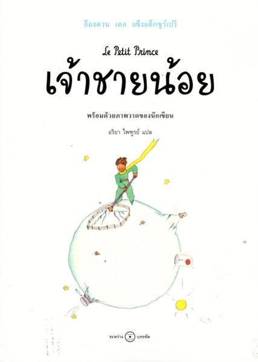

“เจ้าชายน้อย” เป็นวรรณกรรมที่ได้รับการยกย่องให้เป็นหนึ่งในงานเขียนที่ดีที่สุดของโลกว่าด้วยเรื่องราวของนักบินที่เครื่องบินตกลงในทะเลทรายซาฮารา เขาได้พบกับ "เจ้าชายน้อย" เด็กชายจากดาวดวงอื่นที่เดินทางผ่านหลายดวงดาวเพื่อสำรวจโลกและเรียนรู้เกี่ยวกับผู้คนต่างๆ บนดาวเหล่านั้น การสนทนาระหว่างนักบินและเจ้าชายน้อยเต็มไปด้วยเรื่องราวที่สะท้อนถึงความหมายของชีวิต มิตรภาพ ความรัก และความสูญเสีย ระหว่างการเดินทาง เจ้าชายน้อยได้พบกับตัวละครหลากหลายบนดวงดาวต่างๆ ซึ่งแต่ละตัวละครเป็นสัญลักษณ์ของลักษณะมนุษย์ เช่น กษัตริย์ที่ไร้อำนาจ นักธุรกิจที่นับจำนวนดาวเพื่อความครอบครอง หรือคนติดเหล้าที่ดื่มเพื่อหลีกหนีความอับอาย ความสัมพันธ์ระหว่างเจ้าชายน้อยกับ "ดอกกุหลาบ" และ "สุนัขจิ้งจอก" กลายเป็นหัวใจสำคัญของเรื่องราว สอนให้ผู้อ่านได้เห็นถึงคุณค่าของความรัก ความรับผิดชอบ และการมองสิ่งต่างๆ อย่างลึกซึ้ง
"เจ้าชายน้อย" เป็นหนังสือที่ให้ข้อคิดและสอนใจในหลายมิติ แม้ว่าภายนอกจะเป็นนิทานเด็ก แต่จริงๆ แล้วกลับมีสาระลึกซึ้งเกี่ยวกับการเติบโต ความสูญเสีย และความหมายของการมีชีวิตอยู่ เป็นงานเขียนที่สื่อถึงการมองโลกด้วยสายตาของเด็กที่ไร้เดียงสา แต่กลับตั้งคำถามที่ผู้ใหญ่หลายคนอาจลืมคิดเมื่อเติบโตขึ้น เช่น ความหมายของมิตรภาพ หรือความสำคัญของสิ่งที่เรามองไม่เห็น การเดินทางของเจ้าชายน้อยยังแสดงให้เห็นว่ามนุษย์มักหลงลืมสิ่งสำคัญในชีวิต ท่ามกลางการดิ้นรนหาอำนาจ เงินทอง และความสำเร็จ จนบางครั้งเราพลาดที่จะใส่ใจในรายละเอียดเล็กๆ ที่มีคุณค่า สไตล์การเขียนของแซงเตก-ซูเปรีมีความเป็นกวีและให้ความรู้สึกเศร้าสร้อยในบางช่วง แต่กลับเต็มไปด้วยความงดงามในความคิดและการมองโลก